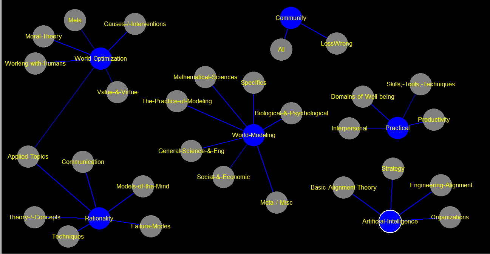

Artificial-Intelligence
[[Basic-Alignment-Theory-->Basic-Alignment-Theory]] [[Engineering-Alignment-->Engineering-Alignment]] [[Strategy-->Strategy]] [[Organizations-->Organizations]] [[Other-->Other]]
Rationality
[[Theory-/-Concepts-->Theory-/-Concepts]] [[Applied-Topics-->Applied-Topics]] [[Failure-Modes-->Failure-Modes]] [[Communication-->Communication]] [[Techniques-->Techniques]] [[Models-of-the-Mind-->Models-of-the-Mind]] [[Other-->Other]]
World-Modeling
[[Mathematical-Sciences-->Mathematical-Sciences]] [[General-Science-&-Eng-->General-Science-&-Eng]] [[Meta-/-Misc-->Meta-/-Misc]] [[Social-&-Economic-->Social-&-Economic]] [[Specifics-->Specifics]] [[Biological-&-Psychological-->Biological-&-Psychological]] [[The-Practice-of-Modeling-->The-Practice-of-Modeling]]
World-Optimization
[[Moral-Theory-->Moral-Theory]] [[Causes-/-Interventions-->Causes-/-Interventions]] [[Working-with-Humans-->Working-with-Humans]] [[Applied-Topics-->Applied-Topics]] [[Value-&-Virtue-->Value-&-Virtue]] [[Meta-->Meta]]
Practical
[[Domains-of-Well-being-->Domains-of-Well-being]] [[Skills,-Tools,-Techniques-->Skills,-Tools,-Techniques]] [[Productivity-->Productivity]] [[Interpersonal-->Interpersonal]]
Community
[[All-->All]] [[LessWrong-->LessWrong]]
Basic-Alignment-Theory
[[Decision-Theory-->Decision-Theory]] (305) [[Inner-Alignment-->Inner-Alignment]] (141) [[Outer-Alignment-->Outer-Alignment]] (122) [[Utility-Functions-->Utility-Functions]] (122) [[Optimization-->Optimization]] (90)
Engineering-Alignment
[[Transparency-/-Interpretability-->Transparency-/-Interpretability]] (146) [[Value-Learning-->Value-Learning]] (130) [[Oracle-AI-->Oracle-AI]] (71) [[Iterated-Amplification--->Iterated-Amplification-]] (61) [[AI-Boxing--->AI-Boxing-]] (56)
Strategy
[[AI-Risk-->AI-Risk]] (510) [[AI-Timelines-->AI-Timelines]] (202) [[AI-Takeoff-->AI-Takeoff]] (137) [[AI-Governance-->AI-Governance]] (129) [[Regulation-and-AI-Risk-->Regulation-and-AI-Risk]] (20)
Organizations
[[Machine-Intelligence-Research-Institute-->Machine-Intelligence-Research-Institute]] (136) [[OpenAI-->OpenAI]] (51) [[DeepMind-->DeepMind]] (43) [[Future-of-Humanity-Institute--->Future-of-Humanity-Institute-]] (28) [[AI-Safety-Camp-->AI-Safety-Camp]] (23)
Theory-/-Concepts
[[Decision-Theory-->Decision-Theory]] (305) [[Epistemology-->Epistemology]] (206) [[Game-Theory-->Game-Theory]] (188) [[Bayes'-Theorem-->Bayes'-Theorem]] (138) [[Utility-Functions-->Utility-Functions]] (122)
Applied-Topics
[[Scholarship-&-Learning-->Scholarship-&-Learning]] (257) [[Forecasting-&-Prediction-->Forecasting-&-Prediction]] (256) [[Practice-&-Philosophy-of-Science-->Practice-&-Philosophy-of-Science]] (179) [[Group-Rationality-->Group-Rationality]] (76) [[Betting-->Betting]] (68)
Failure-Modes
[[Heuristics-&-Biases-->Heuristics-&-Biases]] (194) [[Goodhart's-Law-->Goodhart's-Law]] (77) [[Pitfalls-of-Rationality-->Pitfalls-of-Rationality]] (68) [[Fallacies-->Fallacies]] (67) [[Rationalization-->Rationalization]] (62)
Communication
[[Philosophy-of-Language-->Philosophy-of-Language]] (128) [[Conversation-->Conversation]] (109) [[Disagreement-->Disagreement]] (96) [[Distillation-&-Pedagogy-->Distillation-&-Pedagogy]] (91) [[Inferential-Distance-->Inferential-Distance]] (48)
Techniques
[[Techniques-->Techniques]] (95) [[Noticing-->Noticing]] (32) [[Trigger-Action-Planning-->Trigger-Action-Planning]] (28) [[Double-Crux-->Double-Crux]] (26) [[Hamming-Questions-->Hamming-Questions]] (26)
Models-of-the-Mind
[[Consciousness-->Consciousness]] (140) [[General-Intelligence-->General-Intelligence]] (85) [[Subagents-->Subagents]] (85) [[Predictive-Processing-->Predictive-Processing]] (27) [[Dual-Process-Theory--->Dual-Process-Theory-]] (23)
Mathematical-Sciences
[[Decision-Theory-->Decision-Theory]] (305) [[Logic-&-Mathematics--->Logic-&-Mathematics-]] (280) [[Probability-&-Statistics-->Probability-&-Statistics]] (232) [[Anthropics-->Anthropics]] (199) [[Game-Theory-->Game-Theory]] (188)
General-Science-&-Eng
[[Machine-Learning--->Machine-Learning-]] (258) [[Physics-->Physics]] (147) [[Programming-->Programming]] (140) [[Space-Exploration-&-Colonization-->Space-Exploration-&-Colonization]] (48) [[Nanotechnology-->Nanotechnology]] (19)
Meta-/-Misc
[[Book-Reviews-->Book-Reviews]] (310) [[Scholarship-&-Learning-->Scholarship-&-Learning]] (257) [[Academic-Papers-->Academic-Papers]] (107) [[Distillation-&-Pedagogy-->Distillation-&-Pedagogy]] (91) [[Research-Agendas-->Research-Agendas]] (83)
Social-&-Economic
[[Politics-->Politics]] (323) [[Social-&-Cultural-Dynamics-->Social-&-Cultural-Dynamics]] (262) [[Economics-->Economics]] (256) [[History-->History]] (204) [[Progress-Studies-->Progress-Studies]] (189)
Specifics
[[Covid-19-->Covid-19]] (877) [[General-Intelligence-->General-Intelligence]] (85) [[IQ-and-g-factor-->IQ-and-g-factor]] (58) [[Neocortex-->Neocortex]] (13)
Biological-&-Psychological
[[Health-/-Medicine-/-Disease-->Health-/-Medicine-/-Disease]] (158) [[Consciousness-->Consciousness]] (140) [[Neuroscience-->Neuroscience]] (126) [[Biology-->Biology]] (122) [[Evolution-->Evolution]] (116)
The-Practice-of-Modeling
[[Forecasting-&-Prediction-->Forecasting-&-Prediction]] (256) [[Practice-&-Philosophy-of-Science-->Practice-&-Philosophy-of-Science]] (179) [[Forecasts--->Forecasts-]] (99) [[Prediction-Markets-->Prediction-Markets]] (82) [[Replication-Crisis-->Replication-Crisis]] (55)
Moral-Theory
[[Ethics-&-Morality-->Ethics-&-Morality]] (312) [[Metaethics-->Metaethics]] (71) [[Altruism-->Altruism]] (69) [[Consequentialism-->Consequentialism]] (65) [[Moral-Uncertainty-->Moral-Uncertainty]] (59)
Causes-/-Interventions
[[Existential-Risk-->Existential-Risk]] (194) [[Futurism-->Futurism]] (93) [[Transhumanism-->Transhumanism]] (60) [[Life-Extension-->Life-Extension]] (59) [[Aging-->Aging]] (51)
Working-with-Humans
[[Game-Theory-->Game-Theory]] (188) [[Coordination-/-Cooperation-->Coordination-/-Cooperation]] (161) [[Mechanism-Design-->Mechanism-Design]] (102) [[Social-Status-->Social-Status]] (89) [[Group-Rationality-->Group-Rationality]] (76)
Value-&-Virtue
[[Suffering-->Suffering]] (72) [[Art-->Art]] (66) [[Complexity-of-Value-->Complexity-of-Value]] (61) [[Fun-Theory-->Fun-Theory]] (45) [[Ambition-->Ambition]] (39)
Meta
[[Effective-Altruism-->Effective-Altruism]] (200) [[Cause-Prioritization-->Cause-Prioritization]] (41) [[Heroic-Responsibility-->Heroic-Responsibility]] (30) [[Center-on-Long-Term-Risk--->Center-on-Long-Term-Risk-]] (17)
Domains-of-Well-being
[[Emotions-->Emotions]] (133) [[Financial-Investing-->Financial-Investing]] (124) [[Parenting-->Parenting]] (122) [[Careers-->Careers]] (115) [[Well-being-->Well-being]] (101)
Skills,-Tools,-Techniques
[[Emotions-->Emotions]] (133) [[Software-Tools-->Software-Tools]] (120) [[Cryonics-->Cryonics]] (118) [[Virtues--->Virtues-]] (95) [[Planning-&-Decision-Making-->Planning-&-Decision-Making]] (89)
Productivity
[[Productivity-->Productivity]] (166) [[Motivations-->Motivations]] (160) [[Akrasia-->Akrasia]] (76) [[Procrastination-->Procrastination]] (33) [[Willpower-->Willpower]] (30)
Interpersonal
[[Relationship-->Relationship]] (142) [[Conversation--->Conversation-]] (109) [[Communication-Cultures-->Communication-Cultures]] (83) [[Circling-->Circling]] (8)
All
[[Public-Discourse-->Public-Discourse]] (108) [[Research-Agendas-->Research-Agendas]] (83) [[Ritual-->Ritual]] (68) [[Grants-&-Fundraising-->Grants-&-Fundraising]] (60) [[Growth-Stories-->Growth-Stories]] (59)
LessWrong
[[Site-Meta-->Site-Meta]] (573) [[Events--->Events-]] (149) [[Meetups-&-Local-Communities--->Meetups-&-Local-Communities-]] (81) [[Tagging-->Tagging]] (29) [[The-SF-Bay-Area-->The-SF-Bay-Area]] (27)